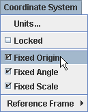
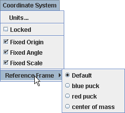
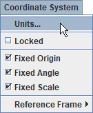

Koordinatni
sistem
Ko označimo točko v glavnem pogledu na video v programu Tracker, določimo njen položaj na sliki. Položaje na sliki merimo v pikslih relativno na zgornji levi kot video slike. V primeru slike velikosti 320 x 240 je poksel v levem zgornjem kotu na poziciji slike (0.0, 0.0) na spodnjem desnem kotu pa na položaju (320.0, 240.0).
Ker je
video slika pogled kamere na realni svet, ima fizični objekt s te slike
tudi koordinate sveta. Koordinate sveta merimo v merskih enotah
sveta (n.pr. metrih) relativno na podani referenčni okvir. Izhodišče
referenčnega okvirja je lahko kjerkoli na sliki.
Koordinatni sistem je množica transformacij, potrebnih za
pretvorbo položajev na sliki v koordinate sveta. Koordinatni sistem
določa za vsako sličico videa:
1. Nastavljanje lastnosti koordinatnega sistema
Privzeto so merilo, izhodišče in naklon koordinatnega sistema fiksni--torej se od sličice do sličice ne spreminjajo. Vendar lahko katerokoli od teh omogočimo spreminjanje z izklopom lastnosti fiksirano v menuju koordinatnega sistema v vrstici z menuji.

Nastavljeni položaji in lastnosti izhodišča so tisti, ki veljajo za privzeti referenčni okvir. Menu Koordinatni sistem|Referenčni okvir omogoča izbiro drugih referenčnih okvirjev, pri katerih se giblje izhodišče skupaj z masno točko, težiščem ali s sledjo modela z delci. Referenčni okvirji s težiščem so posebno pripravni pri proučevanju trkov.

2. Postavljanje merila (kalibracija)
Merilo postavljamo s pomočjo merilne palice ali z merilnimi točkami.
3.Postavljanje
izhodišča
Položaj izhodišča postavljamo s pomočjo osi, odmika izhodišča ali z merilnimi točkami.
4. Postavljanje naklona
Naklon osi x nastavljamo s pomočjo osi, merilne palice ali merilnih točk.
Kote lahko prikazujemo bodisi v stopinjah, bodisi v radianih. Želene enote izberemo v menuju Enote za kot.

6. Zaklepanje koordinatnega sistema
Zaklepanje koordinatnega sistema preprečuje spreminjanje merila, izhodišča in naklona. Zaklepamo z vklopom lastnosti Zaklenjeno v menuju Koordinatni sistem.